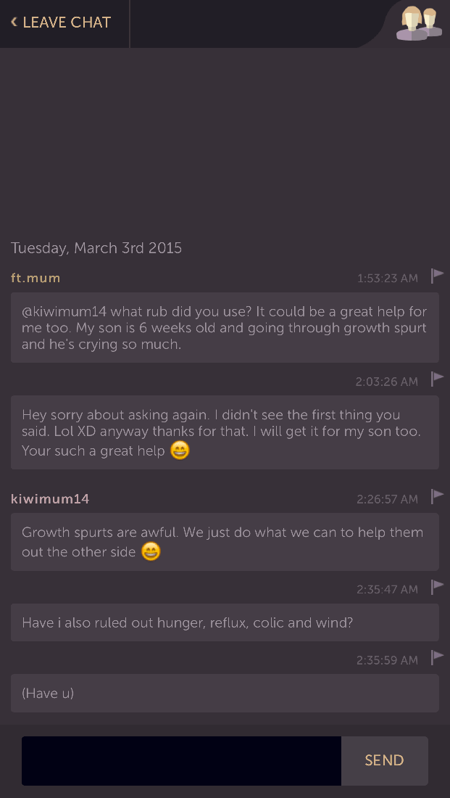
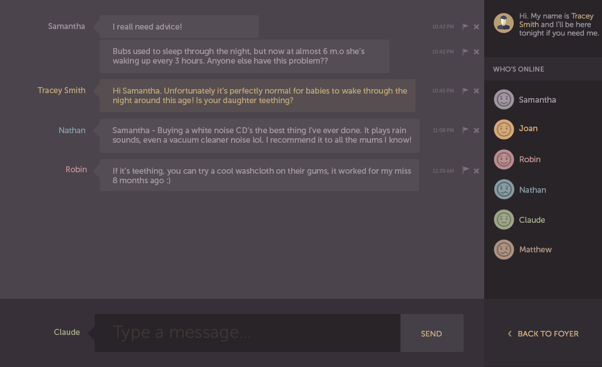
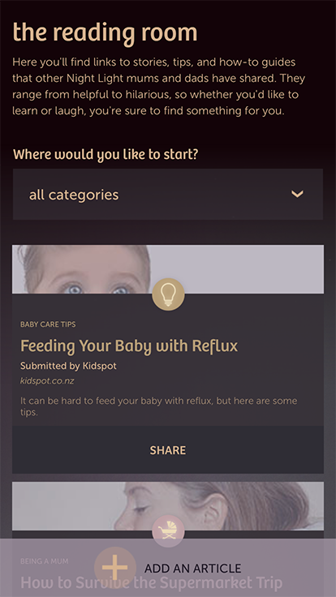

The Solution
A place to get support
Parents need help the most when their baby has trouble sleeping. Being up late at night and not knowing what to do can make them feel all alone. That’s why a chatroom was chosen. It would allow parents to connect with one and other. To keep each other company and provide advice.


A wealth of other resources were also available to parents. The Reading Room provided links to helpful articles and the Nurses Office provided quick access to the Tresillian help line, Australia’s largest child and family health organisation.


Johnson’s Baby has an active Facebook community which was tapped to promote Night Light. It was liked over 400 times during the period that Night Light was active.